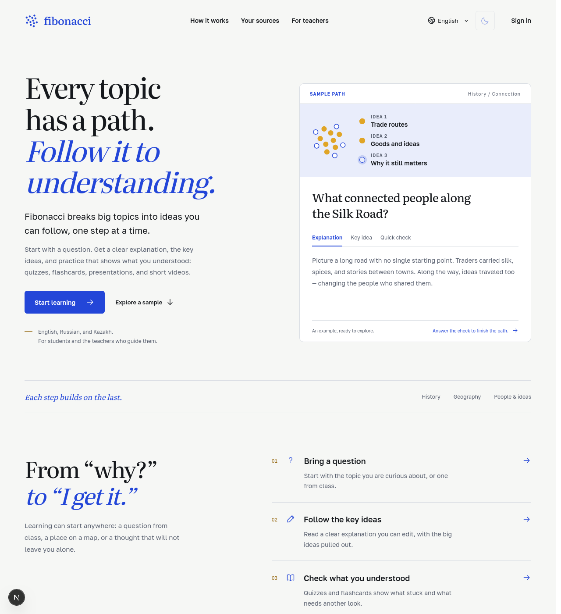

EdTech · AI
Fibonacci превращает вопрос или ваш учебный материал в понятный путь: объяснение, ключевые идеи, тест, карточки, презентацию и короткое видео — на казахском, русском и английском.

Проблема
Решение
| 1 | Принесите вопрос или материал. Тема из урока или вставленный текст: конспект, отрывок учебника, статья. Учителя загружают PDF, Word и текст. |
| 2 | Разберите ключевые идеи. Понятное объяснение по возрасту, которое можно редактировать, с главными идеями. |
| 3 | Проверьте понимание. Тесты, карточки, презентации и видео-объяснения, построенные на вашем материале. |
| ✓ | Ответы с источником. Материалы учителя указывают страницу или абзац источника; если в источниках нет данных — Fibonacci говорит об этом, а не угадывает. |
Что уже работает (MVP)
| Ученик | Учитель |
|---|---|
|
|
Интерфейс и материалы на казахском, русском и английском. Приватные аккаунты, 300+ автоматических тестов.
Отличие
| ИИ-чаты | Fibonacci | |
|---|---|---|
| Структура | Ответ на один вопрос | Путь: объяснение → идеи → проверка |
| Доверие | Источник неизвестен | Опора на ваш материал, ссылки на страницы |
| Языки | Казахский — слабо | Казахский наравне с русским и английским |
| Для учителя | Копировать и форматировать вручную | Готовые редактируемые материалы урока |
| Формат | Текст | Тест, карточки, слайды, видео |
Технологии и дальше
Стек
|
Следующие шаги
|
Fibonacci — каждый шаг опирается на предыдущий.